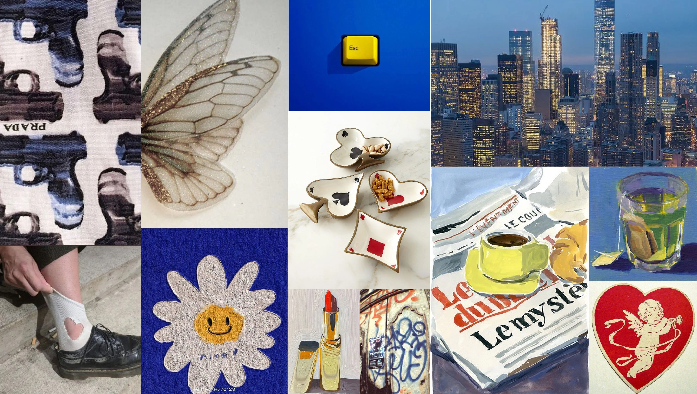
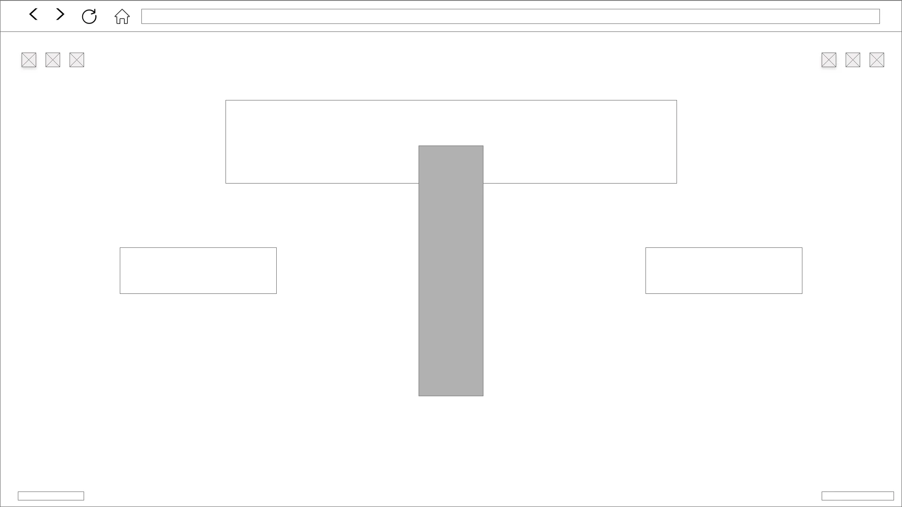
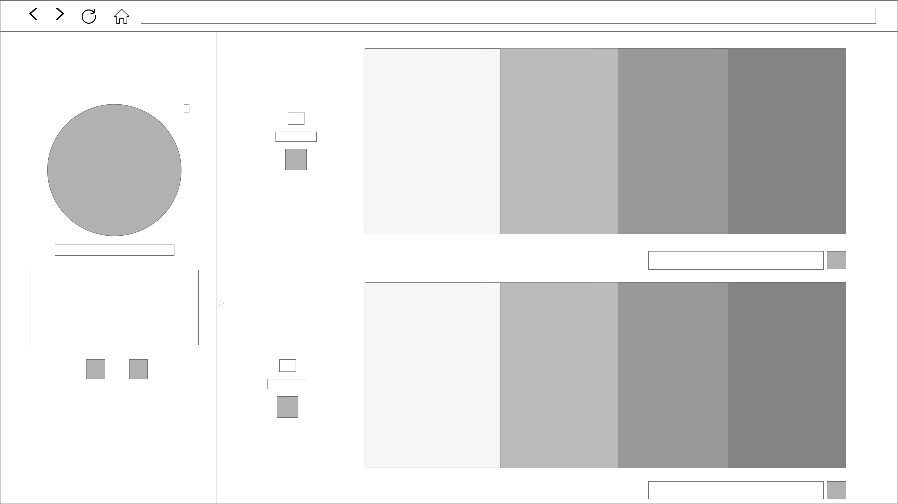

Protopersonas
Tomás
Extremo por falta
Joven de 21 años, residente de la comuna Santiago Centro, vive con otros dos amigos compartiendo gastos y está preparandose para entrar a la universidad pues tienes aspiraciones a estudiar algo relacionado con lo audiovisual. Entusiasta del skate. Cada semana frecuenta ferias libres en busca de prendas que pueda vestir para sí a bajo costo y tambien para revenderlas en Barrio Lastarria, en parte por su interés en el streetwear pero principalmente porque necesita ingresos extras. Siempre se rodea de amigos, los cuales son muchas veces quienes le toman fotografías para subir a instagram, plataforma en la cual posee más de 3000 seguidores, los cuales reconocen en él, a alguien con buenos outfits.
Los trucos en skate que desea aprender los busca en youtube o tiktok, mientras que la inspiración para vestir la encuentra en Pinterest
Paula
Mainstream User
Tiene 24 años, reside en la comuna de Providencia con su mamá. Se encuentra cursando el tercer año de una carrera universitaria pues aspira a un título profesional. Trabaja en un Starbucks 20horas semanales en la comuna de las Condes, parte de su salario lo invierte mensualmente en prendas que siente, la identifican como ella misma siempre buscando originales looks los que combina con maquillaje en los ojos a diario y con frecuencia utiliza uñas gel. Asegura tener un estilo propio. Se declara amante de la moda. Siempre esta en busca de inspiración en el arte, la danza y el teatro o en tiktok. Nunca sabe que hacer con la ropa o accesorios que ya no le quedan y que se encuentran en excelente estado; le gustaria venderlas pero no tiene tiempo para instalarse en una feria libre debido a sus estudios es por ello que utiliza el Marketplace de Facebook.
Courtney
Extremo por exceso
Con 28 años Courtney reside en la comuna de Vitacura, se desempeña como azafata Internacional para LATAM, ha viajado por numerosos paises de europa y de asia, su gran inspiración y placer culpable es la ropa de diseñador, En su tiempo libre suele leer las revistas de moda que compra en los diversos lugares que recorre en parte por trabajo pero tambien por placer, le gusta pensarse a si misma como una modelo, es por ello que siempre esta en busca de nuevas tendencias y nuevas prendas. Suele comprar más de lo que se va a poner pues se declara compradora compulsiva, ella prefiere pagar más si eso implica un productos fabricado con los mejores materiales y en vanguardia de la tendencia, renueva su closet constantemente y es por ello que apoya fuertemente la economía circular. Es usuaria de multiples sitios desde el ordenador y su celular para poder vender lo que ya no usa y desocupar su clóset para almacenar las nuevas prendas que compra.
Moodboard
Colores
Tipografías
Playfair Display:Transitional serif typeface
La tipografia posee un alto contraste y delicadas finas lineas, lo cual la vuelve excelente para títulos o Subtítulos. Cabe señalar que en tamaños pequeños pierde legibilidad, por ende teniendo en cuenta la responsividad, esta será utilizada solo en títulos de mayor tamaño que permitan visualizar apropiadamente el estilo de la tipografia
Poppins:Geometric sans-serif typeface.
La tipografia que posee un estilo geométrico y limpio. Posee un rango de estilos basados en 18 pesos de fuente, es decir desde fino hasta negro caracteristica que conjuga con un estilo abierto, lo que la vuelve ideal tanto para títulos como para texto de párrafo pues ambas carcateristicas benefician la legibilidad. En este caso la usaremos para subtítulos,encabezados de sección, párrafos; es decir para estructurar el cuerpo del contenido web.
Antecedentes

En Prilov encuentras las mejores marcas hasta con 75% off del precio de retail. Todos los días más de 200 productos son publicados.

Designer. Preloved. Vintage. Streetwear. Sneakers. Whatever your style. Find it on Depop.

Marcas de lujo a precios increíbles. Solo productos seleccionados. ¡Ven a visitarnos!

Sitio Web del estilista Julie Cristobal quien estudió Fashion en L'Atelier Chardon Savard.
Wireframe de portada
Hice lo contrario a los antecedentes 0, 1 y 2. Se construyó sintetizando la información presente (esquina superior izquierda: RRSS, esquina superior derecha: Buscar, Iniciar Sesión, Carrito de compras)usando iconos y mostrando solo con palabras lo que verdaderamente (me) importa, ¿estas aquí (TÍTULO-LOGOTIPO.PNG) para comprar o para vender?. En la parte inferior izquierda: FAQ. y en la parte inferior derecha: About.
Wireframe de página interior
Aquí se muestra la estructura del clóset de una usuaria cualquiera, el cual puedes plegar o desplegar según decidas. Primero te doy la opción de denunciar al usuario o contactar a quiénes están detrás de la página (por si hay problemas) pero como es chiquito, primero se ve la foto de perfil, el nombre de la usuaria, su descripción, un icono para enviar un mensaje y otro que te muestra un vínculo a una red social si es que el usuario así lo decide, sino se puede no mostrar. Después te muestro lo importante: talla, precio y un icono con la opción de añadir al carrito, las fotografías de las prendas (basado en el antecedente 3) y luego en la parte inferior derecha el nombre del artículo y un icono que supone la opción de agregar a favoritos.